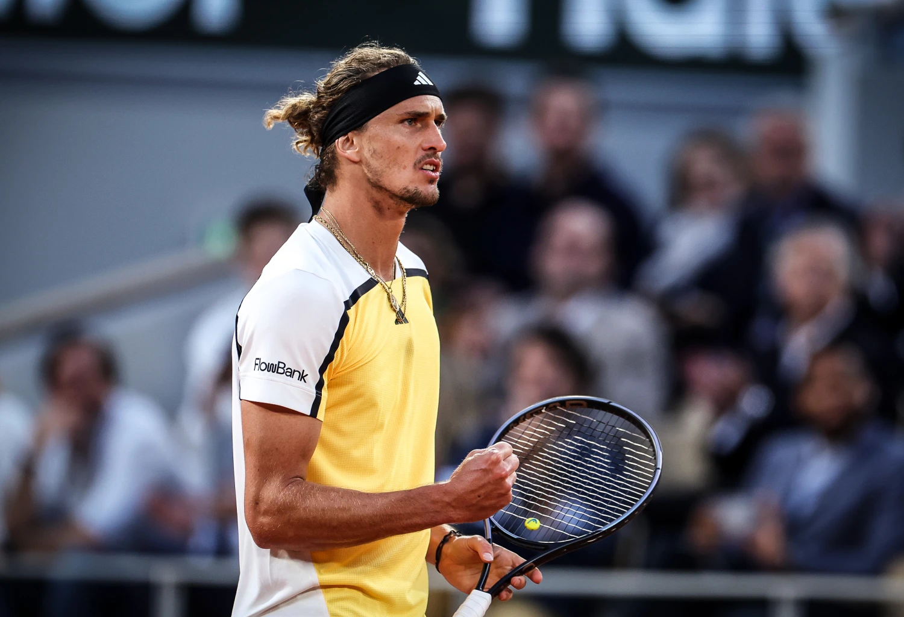

Номер 2 - Александър Зверев
Александър Зверев (Alexander Zverev), известен също като „Саша“ Зверев, е един от водещите тенисисти в света.
Той е германски професионален играч,известен със своята мощна игра, атлетизъм и стабилно представяне на най-високо
ниво. Роден е на 20 април 1997 г. в Хамбург, Германия.Саша е от спортно семейство – родителите му, Александър и Ирина,
са били професионални тенисисти. Неговият по-голям брат,Миша Зверев, също е професионален тенисист. Зверев е известен с
мощния си сервис, който е сред най-добрите в тура.Притежава силен бекхенд с две ръце и отлична игра от основната линия.
В последните години значително е подобрил менталната си устойчивост и представянето си в големите мачове.